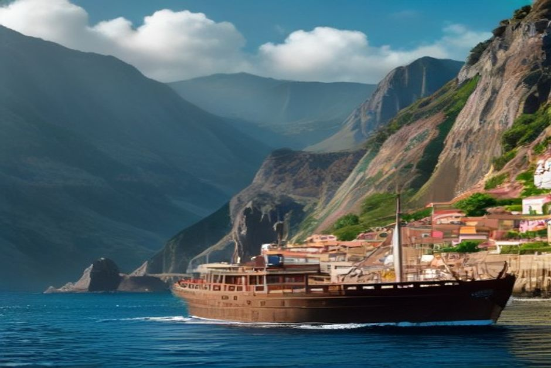
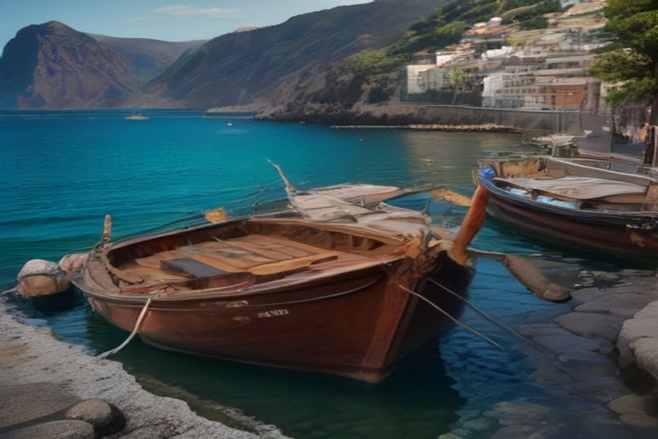

Si busca «Camara do Lobos» (o «Câmara de Lobos», con su acento) es probable que quiera saber tres cosas: si merece la parada, dónde se toma la mejor poncha y cuánto tiempo hay que dedicarle. Respuesta corta: es un puerto pesquero en activo, a unos 9 kilómetros de Funchal, con barcos de madera pintados, bares sencillos y una historia más antigua que la de la capital. Con una hora larga y una poncha en la mano, queda bien aprovechado.
Câmara de Lobos en un vistazo
- Dónde: costa sur de Madeira, a unos 9 km al oeste de Funchal.
- Cuánto se tarda: unos 15 minutos en coche, por la autovía VE4 o por la antigua carretera de la costa que baja hasta el pueblo.
- Qué es: un puerto pesquero que sigue trabajando, no un resort ni una playa.
- Para qué sirve: fotos, una poncha junto al puerto y un rato de paseo entre barcos.
- Para qué no sirve: bañarse. El puerto está lleno de barcos y cabos de amarre.
Cómo llegar a Câmara de Lobos desde Funchal
Por carretera es lo más corto: unos 15 minutos desde Funchal. El puerto queda justo debajo de la autovía, de modo que el pueblo se ve primero como lo que es, un puerto de trabajo, y solo después como mirador. Muchos de los ángulos más fotogénicos se ven desde el agua o desde la carretera que pasa por encima del acantilado.
Por mar es todavía más fácil de situar: es el primer punto de referencia que encuentra cualquier barco que sale hacia el oeste desde la Marina do Funchal, antes de que aparezcan los acantilados de Cabo Girão. Más abajo le cuento cómo encaja en una salida privada.

La poncha de Câmara de Lobos: qué es y dónde tomarla
La poncha es la bebida de Madeira por excelencia: aguardiente de caña, miel y limón, batidos y no agitados. Câmara de Lobos es el pueblo al que más a menudo se atribuye su origen, y en el frente del puerto siguen abiertos pequeños bares de poncha sin pretensiones donde la preparan a la manera tradicional, machacada a mano con un caralhinho de madera.
Si el pueblo la inventó o no en sentido estricto es discutible. Lo que sí es cierto es que, para saber qué es un bar de poncha de verdad en Madeira, este es el sitio que más se parece a la definición. Pida una, siéntese frente a los barcos y no tenga prisa: aquí no hay nada pensado para el turista, y eso es lo mejor que tiene.
Por qué se llama Câmara de Lobos
El nombre significa «guarida de lobos», aunque no tiene nada que ver con lobos de verdad. Cuando el explorador João Gonçalves Zarco desembarcó aquí en 1420, durante el descubrimiento de Madeira, encontró focas monje tumbadas sobre las rocas y las tomó por lobos marinos. El nombre se quedó en la bahía.
Zarco usó Câmara de Lobos como primera base en la isla, de 1420 a 1424, antes de que Funchal estuviera poblada de verdad. Es uno de los lugares habitados sin interrupción más antiguos de Madeira.
De qué vive el pueblo: el espada y los barcos de colores
De la pesca, sobre todo del espada, el pez sable negro que la flota de aguas profundas de Madeira sube desde cientos de metros. El puerto sigue lleno de pequeños barcos de madera pintados de colores vivos que se usan precisamente para eso.
Ahí está la imagen que todos conocen: casas encaladas apiladas por la ladera, viñedos en terrazas que suben por detrás y una pared de acantilado que cierra la escena. Es un pueblo de trabajo, no un decorado, y por eso sale tan bien en las fotos: nada se construyó pensando en las vistas.
Churchill y el mirador: la historia que todos repiten
El 8 de enero de 1950, durante una estancia en el Reid's Palace de Funchal, Winston Churchill viajó hasta Câmara de Lobos, instaló su caballete a la entrada del pueblo y pintó la bahía: los barcos de pesca, las casas blancas y los acantilados del fondo. Es uno de los cerca de 500 cuadros que pintó a lo largo de su vida.
El lugar donde trabajó está hoy señalizado como Miradouro Winston Churchill, a un corto paseo por encima del puerto. La vista que pintó se conserva en gran parte intacta. Si va en coche, es una buena primera parada antes de bajar al puerto.

¿Se puede nadar en Câmara de Lobos?
No de verdad, y no pasa nada. La bahía principal es un puerto activo con barcos de pesca y cabos de amarre, y aquí no hay una playa que merezca ese nombre. El atractivo son los barcos, los acantilados y la historia, no el agua.
Si lo que busca es bañarse, tendrá que seguir por la costa. En la ruta de Chifbay, Câmara de Lobos es la vista de apertura y el baño llega más adelante, en Fajã dos Padres, una vez que el barco ha dejado atrás Cabo Girão.
Câmara de Lobos en barco desde Funchal
Chifbay es una empresa de barcos privados con base en la Marina do Funchal, pantalán C: el barco entero para un solo grupo, hasta 5 personas, con dos patrones titulados de Madeira. Câmara de Lobos es lo primero que se ve en el Day Trip, que sale a las 10:00 o a las 14:00.
- 2 h 30 hasta Ribeira Brava: 500 EUR por el barco entero.
- 3 h hasta Ponta do Sol: 600 EUR por el barco entero.
En ambos casos el recorrido pasa por Câmara de Lobos y Cabo Girão, con baño y paddle surf en Fajã dos Padres. Los precios son por barco, no por persona. Incluyen comida y bebida a bordo, un vídeo 360° con Insta360, imágenes de dron (si el tiempo lo permite) y fotos hechas con una cámara de verdad.
Pasar por delante del puerto en barco da casi el mismo ángulo desde el que pintó Churchill, aunque desde el agua. El color de los barcos y la altura del acantilado se perciben distinto a ras de mar que desde la ventanilla de un coche.
Si prefiere algo más corto, el paseo al atardecer sale 1 h 15 antes de la puesta de sol, durante todo el año: 2 h hasta Cabo Girão por 400 EUR, o 2 h 30 hasta Ribeira Brava por 500 EUR. No incluye parada para bañarse. Para comparar todas las opciones, tiene la guía de excursiones en barco por Madeira.
Cuándo ir a Câmara de Lobos
Funciona en cualquier época del año, porque el pueblo no depende de la temporada como una playa: los barcos, el puerto y los bares de poncha están ahí siempre. Al final de la tarde los acantilados de detrás del pueblo suelen verse mejor, aunque la luz nunca se puede prometer.
Para una visita por su cuenta, cuente con una hora larga: mirador, paseo por el puerto y una poncha. Si va con el coche alquilado, puede combinarlo con Cabo Girão en la misma mañana. Más datos prácticos sobre la salida, el punto de encuentro y la cancelación están en la página de información; la cancelación es gratuita hasta 24 horas antes de la salida.
Mucha gente conoce un solo dato de Câmara de Lobos, que Churchill pintó aquí, y se marcha sin ver el resto. Es más antiguo que Funchal, es la cuna más citada de la poncha y sigue pescando como hace un siglo.
Se pare en la carretera del acantilado o se pase por mar, Câmara de Lobos merece más de los cinco minutos que le dedican la mayoría de los itinerarios. Es un puerto de trabajo que, por casualidad, acogió a un primer ministro con un pincel. Si quiere verlo desde el agua, puede consultar todas las experiencias o leer las opiniones de otros viajeros.